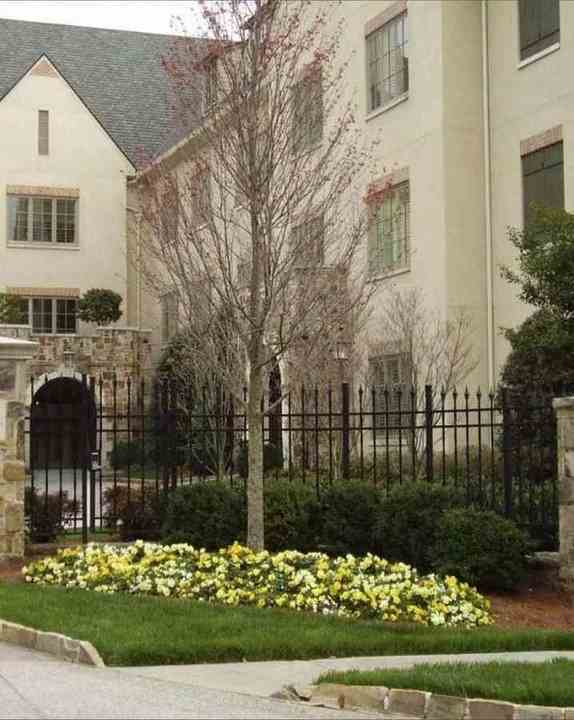
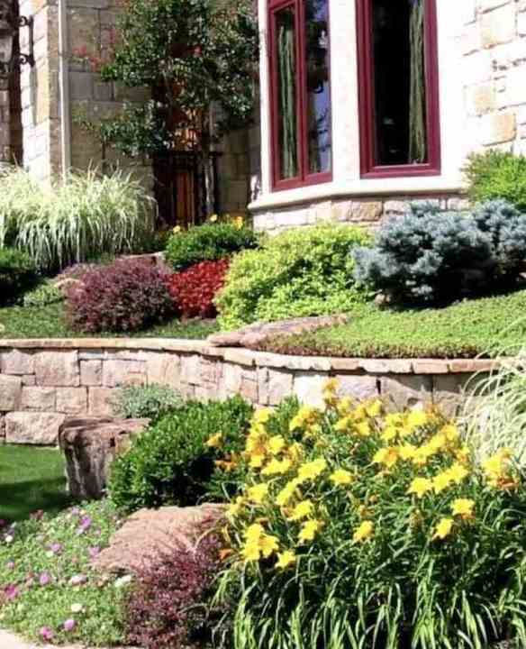
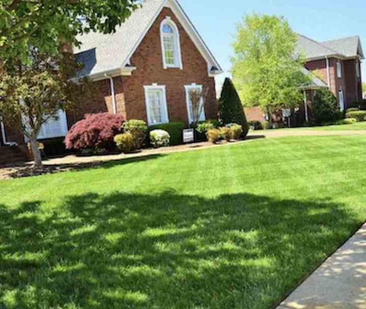
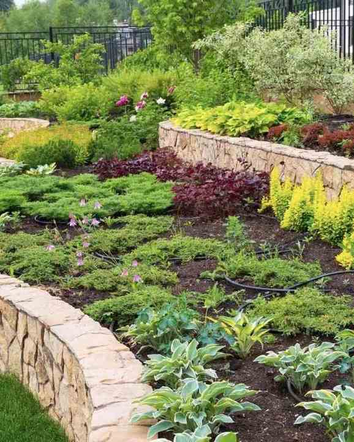
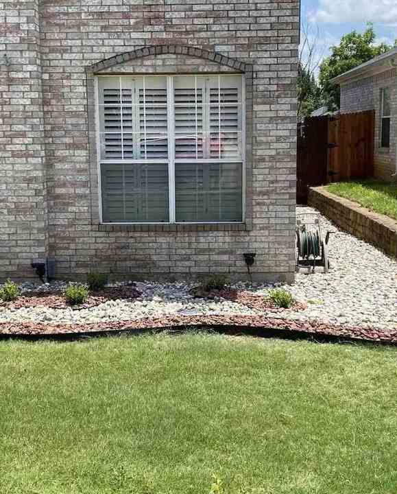

Properties
Commercial landscape management
Grounds programs for property managers, healthcare facilities, building owners, developers, and homeowners associations.
Read this serviceServices
Grouped from the company’s own site and listing.
Properties
Grounds programs for property managers, healthcare facilities, building owners, developers, and homeowners associations.
Read this service
Homes
Landscape management for private homes and estates, where the grounds are the first thing a visitor sees.
Read this service
Projects
Renovation and enhancement, coordinated with landscape architects. Not a standalone architecture practice.
Read this service
Care
Commercial and residential maintenance shaped to the property and the budget, not a generic route sheet.
Read this service
Systems
Irrigation managed for plant health and appearance without treating water as unlimited.
Read this service
Surfaces
Cleaning for commercial and residential surfaces, using products the company says will not harm grass, plants, or trees.
Read this serviceNext step
A call or a short note is enough to start.